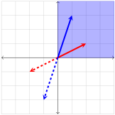
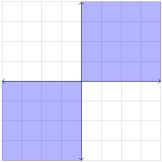
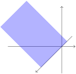
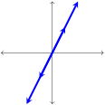

Section 4.1 \(\mathbb{R}^n\) and subspaces of \(\R^n\)
We are familiar with two operations that can be applied to vectors in
\(\R^n\text{,}\) namely, addition of vectors and scalar multiplication. We learned that addition and scalar multiplication satisfy many nice properties (see
Theorem 2.1.22). These properties give
\(\R^n\) an algebraic structure.
We begin this section by introducing another property, called closure. Adding closure to the properties we studied earlier allows us to show that \(\R^n\) satisfies all of the properties of a vector space.
Subsection 4.1.1 Closure
Definition 4.1.1.
A set \(V\) is said to be closed under addition if for each element \(\mathbf{u} \in V\) and \(\mathbf{v} \in V\) the sum \(\mathbf{u}+\mathbf{v}\) is also in \(V\text{.}\)
Definition 4.1.2.
A set \(V\) is said to be closed under scalar multiplication if for each element \(\mathbf{v} \in V\) and for each scalar \(k \in \R\) the product \(k\mathbf{v}\) is also in \(V\text{.}\)
A few examples to warm up to the concepts will be given.
Example 4.1.3.
Let \(E\) be the set of positive even integers. Then \(E\) is closed under addition, because the sum of two even integers is again an even integer.
Example 4.1.4.
Let \(D\) be the set of positive odd integers. Then \(D\) is not closed under addition, for the sum of two odd integers need not be an odd integer (in fact, it will always be even).
Example 4.1.5.
Let \(X_1\) be defined as the set of vectors in \(\mathbb{R}^2\) in the first quadrant (or on an axis on the boundary of the first quadrant). Written in symbols:
\begin{equation*}
X_1=\left\{\begin{bmatrix} x_1\\x_2\end{bmatrix} \in \mathbb{R}^2 : x_1 \ge 0, \ x_2 \ge 0 \right\}
\end{equation*}
Show that \(X_1\) is closed under addition, but \(X_1\) is not closed under scalar multiplication.
Answer.
Suppose \(\mathbf{v}_1=[a,b]\) and \(\mathbf{v}_2=[c,d]\) are in \(X_1\text{.}\) This means that \(a, b, c, d\geq 0\text{.}\) But then we have \(a+c, b+d\geq 0\text{.}\) Therefore
\begin{equation*}
\mathbf{v}_1+\mathbf{v}_2=\begin{bmatrix}a+c\\b+d\end{bmatrix}
\end{equation*}
is also in \(X_1\text{.}\) We conclude that \(X_1\) is closed under addition. \(X_1\) is not closed under scalar multiplication because
\begin{equation*}
(-1)\mathbf{v}_1=\begin{bmatrix}-a\\-b\end{bmatrix}
\end{equation*}
is not in \(X_1\text{.}\)The figure below helps us see that the sum of any two vectors in \(X_1\) also lies in \(X_1\text{.}\)
The next picture pictures how negative multiples of a vector does not list in \(X_1\text{.}\)

Example 4.1.6.
\begin{equation*}
X_3=\left\{\begin{bmatrix} x_1\\x_2\end{bmatrix} \in \mathbb{R}^2 : x_1 \le 0, \ x_2 \le 0 \right\}
\end{equation*}
In other words, \(X_3\) is the set of vectors in \(\R^2\) in the third quadrant (or on an axis on the boundary of the third quadrant). Let \(Y\) consist of \(X_1\) and \(X_3\) combined. In other words, \(Y\) is the set of vectors in \(\R^2\) that are either in the first quadrant, the third quadrant, or lie along one of the axes, as shown below.

Then \(Y\) is closed under scalar multiplication, but \(Y\) is not closed under addition.
Subsection 4.1.2 \(\R^n\) as a Vector Space
In
Theorem 2.1.22 we learned that vector addition and scalar multiplication in
\(\R^n\) satisfy the following eight properties:
For all vectors \(\mathbf{u}\text{,}\) \(\mathbf{v}\text{,}\) \(\mathbf{w}\in\R^n\text{,}\) and scalars \(k, p\in\R\text{,}\)
Commutative Property of Addition: \(\mathbf{u}+\mathbf{v}=\mathbf{v}+\mathbf{u}\text{.}\)
Associative Property of Addition: \((\mathbf{u}+\mathbf{v})+\mathbf{w}=\mathbf{u}+(\mathbf{v}+\mathbf{w})\text{.}\)
Existence of Additive Identity: \(\mathbf{u}+\mathbf{0}=\mathbf{u}\text{.}\)
Existence of Additive Inverse: \(\mathbf{u}+(-\mathbf{u})=\mathbf{0}\text{.}\)
Distributive Property over Vector Addition: \(k(\mathbf{u}+\mathbf{v})=k\mathbf{u}+k\mathbf{v}\text{.}\)
Distributive Property over Scalar Addition: \((k+p)\mathbf{u}=k\mathbf{u}+p\mathbf{u}\text{.}\)
Associative Property for Scalar Multiplication: \(k(p\mathbf{u})=(kp)\mathbf{u}\text{.}\)
Multiplication by \(1\text{:}\) \(1\mathbf{u}=\mathbf{u}\text{.}\)
In addition, observe that
The eight properties of vector operations, together with closure, constitute the criteria for a set with two operations to be considered a vector space. So, \(\R^n\) is a vector space.
We will encounter other vector spaces later. Any vector space must be closed under both of its operations, and must satisfy the other eight properties in the list above.
In the chapter on abstract vector spaces, we will see that a wide variety of sets with a variety of operations are vector spaces (one important reason to study linear algebra). As we shall see, these sets and their operations may look very different, but the behavior of the elements under the two operations makes them vector spaces. For now, we simply focus on \(\R^n\text{.}\)
Subsection 4.1.3 Subspaces of \(\R^n\)
Now that we understand what it means for a set to be closed under addition and scalar multiplication, we are ready for the main definition.
Definition 4.1.7.
Suppose that \(V\) is a nonempty subset of \(\R^n\) that is closed under addition and under scalar multiplication. Then \(V\) is a subspace of \(\R^n\text{.}\)
We use the term subspace because it turns out that any subset of \(\R^n\) closed under both addition and scalar multiplication is also a vector space. In other words, by inheriting vector addition and scalar multiplication from \(\R^n\text{,}\) and satisfying the properties of closure, a subset of \(\R^n\) will automatically satisfy vector space properties. The proof is omitted until reaching abstract vector spaces.
Example 4.1.8.
Let \(V\) be the set of vectors in \(\R^3\) on the \(y-\)axis. Then \(V\) is a subspace of \(\R^3\text{.}\)
Answer.
To verify this, note that any vector in \(V\) is of the form
\begin{equation*}
\begin{bmatrix}0\\y\\0 \end{bmatrix}\text{.}
\end{equation*}
If we multiply such a vector by a scalar \(c\text{,}\) we get a vector of the form
\begin{equation*}
\begin{bmatrix}0\\cy\\0 \end{bmatrix},
\end{equation*}
which is clearly still in \(V\text{.}\) This proves \(V\) is closed under scalar multiplication. Next, note that
\begin{equation*}
\begin{bmatrix}0\\y_1\\0 \end{bmatrix} + \begin{bmatrix}0\\y_2\\0 \end{bmatrix}= \begin{bmatrix}0\\y_1 + y_2\\0\end{bmatrix},
\end{equation*}
so \(V\) is closed under addition.
Recall that the
span of a set of vectors is the set of all linear combinations of those vectors (see
Definition 2.2.14). It is easy to see from this definition, that the span of any set of vectors in
\(\R^n\) must be closed under both addition and scalar multiplication, and therefore the span of those vectors is a subspace of
\(\R^n\text{.}\) This argument proves the following result, giving us an abundance of examples of subspaces:
Theorem 4.1.9.
Let \(S\) be any set of vectors in \(\R^n\text{.}\) Then \(\mbox{span}(S)\) is a subspace of \(\R^n\text{.}\)
In particular, if we take \(S\) to be the single vector \(\mathbf{v}\text{,}\) we have that \(\text{span}(\mathbf{v})\) is a subspace of \(\R^n\text{.}\) Geometrically, this subspace is a line in the direction of the vector \(\mathbf{v}\text{.}\) Similarly, the span of two vectors is a subspace of \(\R^n\text{.}\) If the two vectors are linearly independent, then the subspace is a plane in \(\R^n\text{.}\) Not every line or plane in \(\R^n\) is a subspace, however. The following important result provides us with a quick way to determine that some subsets are not subspaces.
Theorem 4.1.10.
If \(V\) is a subspace of \(\R^n\text{,}\) then the zero vector \(\mathbf{0}\) is in \(V\text{.}\)
Proof.
Take any vector \(\mathbf{v}\) in \(V\text{,}\) and note that \(0 \mathbf{v} = \mathbf{0}\) is in \(V\) because \(V\) is closed under scalar multiplication.
The conclusion of
Theorem 4.1.10 shows that the only lines in
\(\R^n\) that are subspaces are those that pass through the origin. The same holds true for planes and hyperplanes. For example, the plane
\(z=3\) in
\(\R^3\) is not a subspace of
\(\R^3\text{,}\) while any plane containing the origin is a subspace.
Theorem 4.1.11.
If \(V\) is a subspace of \(\R^n\text{,}\) then for any vector \(\mathbf{v} \in V\text{,}\) the opposite vector, \(-\mathbf{v}\text{,}\) is also in \(V\text{.}\)
The proof is similar to what was done for the previous theorem and is left as an exercise.
Exercises 4.1.4 Exercises
Exercise Group.
Let \(Y^+\) be the set of all vectors \([x,y]\) in \(\mathbb{R}^2\) whose \(y\) components are non-negative.
1.
Is \(Y^+\) closed under vector addition?
2.
Is \(Y^+\) closed under scalar multiplication?
Exercise Group.
Let \(X\) be the set of all vectors in \(\R^3\) that lie on either the \(x\)-axis, the \(y\)-axis, or the \(z\)-axis.
3.
Is \(X\) closed under vector addition?
4.
Is \(X\) closed under scalar multiplication?
Exercise Group.
For each figure below, determine whether the set \(V\) of vectors shown in the figure is closed under vector addition and scalar multiplication. Justify your responses.
5.
\(V\) consists of all vectors in \(\mathbb{R}^3\) in a slanted half-plane which has the \(x\)-axis as a boundary.

Is \(V\) closed under scalar multiplication? What about addition?
Answer.
It is closed under addition but not under scalar multiplication.
6.
\(V\) consists of all vectors along the line, as shown.

Is \(V\) closed under scalar multiplication? What about addition?
Answer.
It is closed under both addition and scalar multiplication.
7.
8.
Let \(A\) be an \(m \times n\) matrix. Let \(V\) be the subset of \(\R^n\) consisting of all vectors \(\mathbf{x}\) such that \(A \mathbf{x} = \mathbf{0}\text{.}\) Prove that \(V\) is a subspace of \(\R^n\text{.}\) (Note that this subspace is called the null space of the matrix \(A\) and we will denote it \(\mbox{null}(A)\text{.}\))